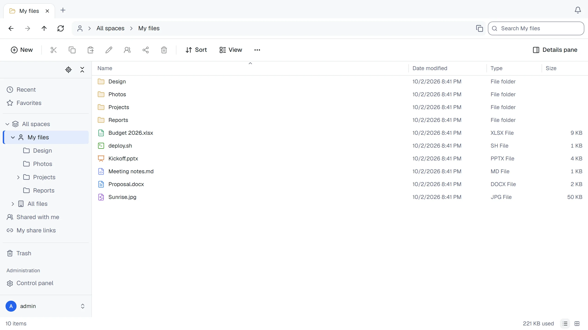
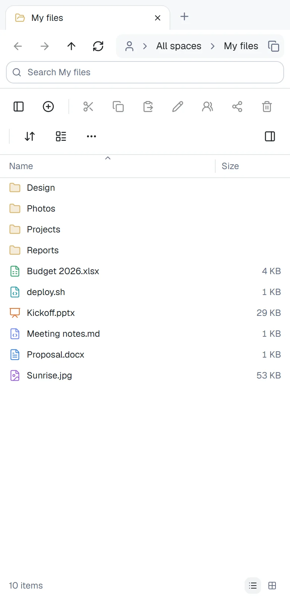

Working with files
ThirtyFile works like File Explorer. This page lists what you can do and the shortcuts that make it quicker.

Finding your way around
- Menu on the left: recent files, favourites, your spaces, items shared with you, your share links and the trash.
- Tabs: open several folders or files side by side. Click + for a new tab, or middle-click a folder to open it in one.
- Address bar: shows where you are. Click any part of it to go there, or click the empty space beside the path (or press Ctrl + L) to see the full path, copy it, or type or paste another path and press Enter to go there (see Paths).
- Search: finds items whose name contains what you type, in the folder you are in and its subfolders (from Recent, Favorites and other lists: everywhere you have access). Letter case doesn't matter, in any language; accents don't matter either once you type three or more characters. On the results page you can widen the search to everywhere, and filter by type, date modified and size. At most 300 results are shown; the page says so when there are more.
- View: choose how the list looks (see Views, columns and groups). The two buttons at the bottom right switch between Details and Large icons.
Recent lists the files you uploaded, edited or opened, newest first, wherever they are: your own files, and files of others in shared spaces and folders. Opening means viewing a file in the browser (the viewer, the editor or the preview pane); downloads and file clients using an app password don't count. Files you can no longer open, and files in the trash, are left out.
A folder with thousands of items opens with its first items right away, and the rest loads in the background: the status bar shows Loading more items… until the list is complete. You can scroll, select and open items in the meantime; Ctrl + A selects everything loaded so far.
Views, columns and groups
The View menu has the same views as File Explorer:
- Large icons and Medium icons: thumbnails of pictures, PDFs and videos (see Thumbnails) with the names below them.
- List: small icons and names side by side in columns, to see many items at once.
- Details: one item per row, with columns.
- Tiles: a thumbnail with the name, type and size beside it.
In Details, drag the edge of a column header to make the column wider or narrower (or select the edge with Tab and use the arrow keys); double-click the edge to give it its usual width again. Right-click a column header, or choose View › Columns, to choose the columns: Date modified, Date created (hidden at first), Type, Size, and where a list has them Location and Uploaded by. Restore default columns undoes your changes. On a phone the list shows the name and size only.
View › Group by puts the items in groups, each under a heading with the number of items in it:
- Type: folders first, then a group per kind of file.
- Date modified: Today, Yesterday, Earlier this week, Last week, Earlier this month, Last month, Earlier this year and A long time ago (weeks start on Monday).
Within a group, items keep the order the list is sorted in. Sorting the other way by the same thing (oldest first, or by type from Z to A) turns the groups around too. The view, the columns and the grouping are remembered in your browser for every folder.
Paths
A path names a folder or file the same way everywhere: in the address bar, and over WebDAV. It starts at the top, where all your spaces are, for example /My files/Reports/2026.xlsx:
/is All spaces.- My files is your personal space. The company space (All files, unless your administrator renamed it) and your team spaces go by their names. If two have the same name, the later one gets a number, such as Projects (2), and the same number is used on WebDAV.
- Shared with me holds folders and files other people shared with you from spaces you aren't a member of:
/Shared with me/Plans/Q1. Two shared items with the same name are numbered too.
The names ThirtyFile gives (My files, All files and Shared with me) show in the language you chose, and a path you type may use them in that language or in English. Letter case doesn't matter, \ works like /, and you can also paste a WebDAV address or a link to a page of ThirtyFile. When nothing is at the path you typed, or you don't have access to it, the address bar says so and keeps what you typed, so you can correct it. Recent, Favorites, the trash and other lists aren't in a space, so their paths can't be typed.
Uploading
- Drag files or whole folders from your computer into the list. Drop them on a folder, in the list, the folder tree, the address bar or a tab showing it, to upload them into that folder instead, or
- click New and choose Upload files or Upload folder.
Progress is shown at the bottom right. When you upload more than 100 files, only the files being sent, paused or failed are listed, and the others are counted below them. Right-click the list to retry every failed file at once. While files are still uploading, the browser asks before you close or reload the page. If the connection drops, or you close the page anyway, the upload continues where it stopped the next time you add the same file.
Downloading
Select one or more items and click Download. Several items, or a folder, arrive as one ZIP file.
Progress is shown at the bottom right. Downloads larger than 256 MB (64 MB on phones and tablets) go straight to your browser's own download list instead, so the page doesn't hold them in memory.
Up to 10,000 selected items can be downloaded at once. For more, download the folder they are in: a folder counts as one item, however much it holds.
Compressing and extracting ZIP files
- Compress: select items, right-click and choose Compress to ZIP file. A compressed ZIP file appears next to them, named after the item (or, for several items, after their folder). It counts against the space's storage like any other file.
- Extract: right-click a ZIP file and choose Extract all. Its contents go into a new folder next to it, named after the ZIP file. Names that are taken get a number, as elsewhere.
Both run on the server: a message at the bottom shows how far they got, and you can keep working meanwhile. Both are recorded in the activity log.
To keep one file from filling the server, a ZIP file isn't extracted when:
- its contents are larger than the space has room for, or larger than 16 GB;
- it holds more than 20,000 files and folders;
- its contents would grow far more than ordinary files do (more than 250 times their compressed size), as in a "ZIP bomb";
- a name inside it leads outside the new folder (
../or a full path), or isn't allowed (for example it contains:or?); - it is protected with a password, or compressed with a method other than the usual one (deflate).
ZIP files can't be extracted yet in a space that shows a folder on the server; download them and extract them on your computer. Compressing works there.
Organising
- Select: click an item. Hold Ctrl to add more, Shift to select a range, or drag a box around items.
- Move: drag items onto a folder, cut and paste, or right-click and choose Move to…. You can drop on a folder in the list, in the folder tree (hold the items over a closed folder for a moment to open it), on a part of the address bar, or on a tab showing a folder. In the Move to… window, New folder makes a folder inside the one you are looking at and opens it.
- Copy: hold Ctrl (Option on a Mac) while you drop the items, copy and paste, or right-click and choose Copy to….
- Rename: press F2.
- Right-click an item for everything else: copy to, move to, favourites, properties.
After you move, rename or delete items, the message at the bottom has an Undo button for a few seconds. It moves the items back, gives back the old name, or restores them from the trash. Ctrl + Z in the list does the same for the last of these actions.
Details
Click Details pane in the toolbar, or press Alt + Enter, to show the details pane on the right. It describes the selected item, or the open folder when nothing is selected.
- Size and Contains: for a folder, the size of everything inside it at every level, and how many files and folders that is. Items in the trash are not counted. A large folder takes a moment to add up.
- With several items selected, the pane shows how many files and folders they make up together, counting what the selected folders hold, and their total size.
- Activity: who uploaded, edited, renamed, moved, copied, deleted or restored the item, and when. For a folder, this includes what happened to everything now inside it (including items in the trash); for the root folder of a space, the whole space. Only the 50 most recent entries are shown.
Everyone who can open an item sees its activity. Changes to sharing and permissions (who was given access, share links) are shown only to the space's managers and owners. The complete log, with filters and export, stays in the activity log.
When the name is already taken
Before uploading, moving, copying, pasting or restoring from the trash, ThirtyFile checks whether the destination already has an item with the same name (letter case doesn't count, except in folders on the server). For each one it asks, showing the size and date of both:
- Replace: an uploaded file gives its content to the file already there, which keeps its shares, permissions and favourites, and keeps its old content as an earlier version. When moving, copying or restoring, the item already there goes to the trash, so it can still be brought back.
- Skip: this item is left out.
- Keep both: the new item gets a number, such as Report (1).docx. The upload list shows the name it was saved as.
Tick Do this for the next conflicts to give the same answer to every remaining one, or choose Cancel to stop without changing anything. An uploaded folder whose name is taken is merged into the folder there: Replace replaces the files that have the same names inside it, Keep both keeps both of them. A copy pasted into its own folder always gets a number, as in Windows.
If the folder you are uploading to is deleted, or you lose permission to add files to it, before the upload finishes, the upload fails and the upload list says why; the file doesn't end up anywhere else.
Earlier versions
When you save a file in the online editor, replace it with an upload, or restore an earlier version, the content it had is kept as an earlier version. Select the file and open the details pane (Alt + Enter): Versions lists them, newest first, with who wrote each one and when. Open shows a version in a new browser tab, Download saves it, and Restore makes it the file's content again; what the file had until then becomes a version too, so a restore can be undone the same way.
- By default each file keeps its last 20 versions, each for 90 days. The administrator can change both, or turn versions off, under Control panel › General.
- Earlier versions don't count toward a space's size; the administrator sees how much they take under Control panel › Storage usage.
- Versions stay with the file when it is renamed or moved, also to another space. A copy starts without versions. Deleting the file for good deletes its versions.
- Anyone who can open the file can see and download its versions; restoring needs permission to edit it.
Keyboard shortcuts
| Keys | Action |
|---|---|
| Enter | Open |
| Alt + ↑ | Go up one folder |
| Alt + ← or Backspace | Back |
| Alt + → | Forward |
| ← → (in an open file) | The previous or next file of its folder, in the folder's sort order |
| Ctrl + L or Alt + D | Go to the address bar, with the full path selected for copying or typing another path |
| Ctrl + F or F3 | Go to the search box |
| F5 | Refresh the list (the page itself isn't reloaded) |
| F2 | Rename |
| Delete | Move to the trash |
| Shift + Delete | Delete permanently, without going through the trash. It asks first, and only works where you may delete |
| Ctrl + X / C / V | Cut, copy, paste |
| Ctrl + Z | Undo the last move, rename or delete, also after its message has gone |
| Ctrl + A | Select everything |
| Ctrl + Shift + N | New folder |
| Alt + Enter | Show details |
| ↑ ↓ Home End | Move through the list (also ← → in the icon view and the space tiles). Hold Shift to select as you go |
| Space | Select the item with the focus. With Ctrl, add it to the selection or remove it |
| Letters | Go to the next item whose name starts with them. Type quickly to match more letters; type the same letter again for the next item starting with it |
| Esc | Clear the selection, or close the preview, the details pane or the phone menu when it covers the list |
| ? (Shift + /) | Show the list of shortcuts. It's also under See more (⋯) › Keyboard shortcuts |
| Tab (first press on a page) | Show the Skip to main content link, which jumps past the bars and the navigation pane |
On a Mac, use ⌘ for Ctrl and Option for Alt; the menus and the list of shortcuts show them that way. Shortcuts don't apply while you are typing in a box, except F5.
The folder tree on the left is one stop for Tab. In it, ↑ and ↓ move between folders, → expands a folder (or goes to its first subfolder), ← collapses it (or goes to the folder above), Home and End jump to the first and last folder, and Enter opens the folder.
The trash
Deleted items go to the trash, where they can be restored. They are removed for good after 30 days (the administrator can change this with THIRTYFILE_TRASH_DAYS, or keep them until the trash is emptied), or when you empty the trash. The trash page shows how many days apply.
The trash lists deleted items of every space you can open. Empty trash deletes only the items of the spaces you manage (your own files, and team spaces where you are a manager); it asks first, naming each space and how many items go. Items of spaces you can only view stay.
The Deleted by column shows who moved each item to the trash (on wider screens). Items deleted before ThirtyFile recorded this, or by an account that was removed since, show a dash. To see only what you deleted yourself, choose Deleted by me above the list; Deleted by everyone shows the whole trash again.
On a phone
The same site works on a phone. Tap an item to open it, and use the buttons above the list for everything else.
- Select: hold your finger on an item for a moment. It's selected, and from then on a tap adds an item to the selection or takes it out. On a tablet, the menu for the selected items opens as well.
- Act on the selection: while items are selected, a bar at the bottom offers Download, Share, Move and Delete, and More for everything else. × clears the selection.
- Check boxes: turn on View › Item check boxes to show a check box on each item, in every view.
- Home screen: add the site to your home screen (in Safari, Share › Add to Home Screen; in Chrome, Add to home screen or Install app). It then opens like an app, without the browser's bars, under your site's name and logo.
